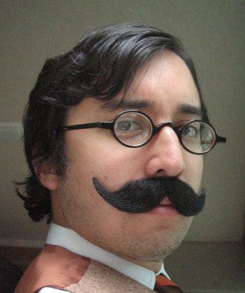

Ah, Gametap. I look back on this project with great fondness. Turner Broadcasting came to The Barbarian Group in 2005 for assistance launching their Gametap initiative. It was a revolutionary service that promised to make years of videogame history available to anyone with an internet connection and a PC.
Now, I've long been a fan of gaming in all forms, and this project was right up my alley. We dug deeply into it, building a theme of classic videogame characters spilling over into reality. We created an XTREME school to teach platform jumping, and ran commercials for it during Cartoon Network's Adult Swim. We created a psychological institute to help 2D videogame characters adapt to a 3D world, a MENSA parody site, and a travel agency called First-Person Getaways. We parodied Gizmodo, Jalopnik, and the Department of Homeland Security. We created blogs, Flickr accounts, and Myspace profiles authored by videogame characters, and our own ad banner network. Honestly, we might've gone a little overboard.
This was a landmark project for me: it marked the first time I crossed over from the tech department to creative, something that I convinced the company should be formal policy. I was heavily involved in ideation, wrote 3 blogs, acted in the TV spots (that's me on the right), created ecards (this was my personal favorite), and developed most of the 12 TLDs where we created fake sites. For the Extreme Platform Jumping School, I coded my first (and only) browser shake Javascript.
The campaign has long since been taken down, but luckily I still have a few of the major sites archived.
- X-treme Platform Jumping School (fake school)
- First-Person Getaways (fake travel site)
- Department of Gameland Security (fake national security site)
- S.E.R.V.E. (fake MENSA site)
- The Institute for Additional Dimension Adjustment Therapy (fake research institiute)